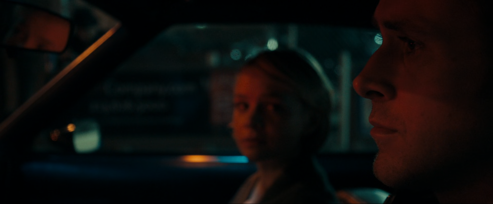
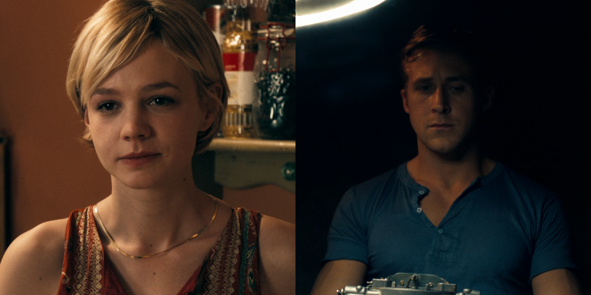
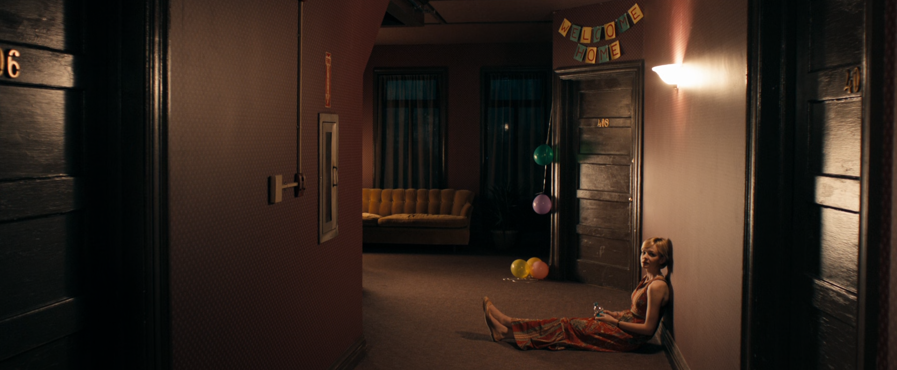
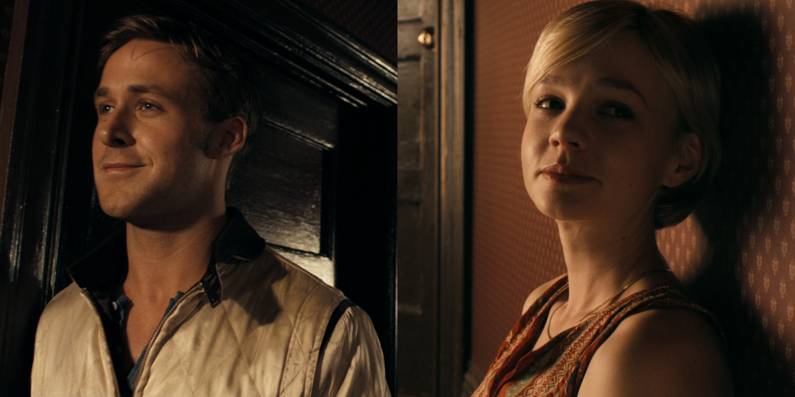
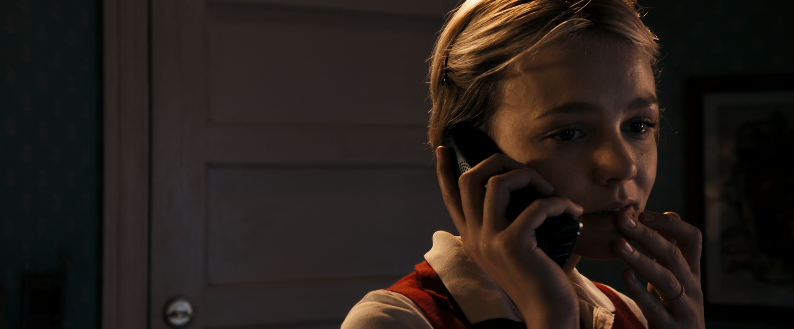
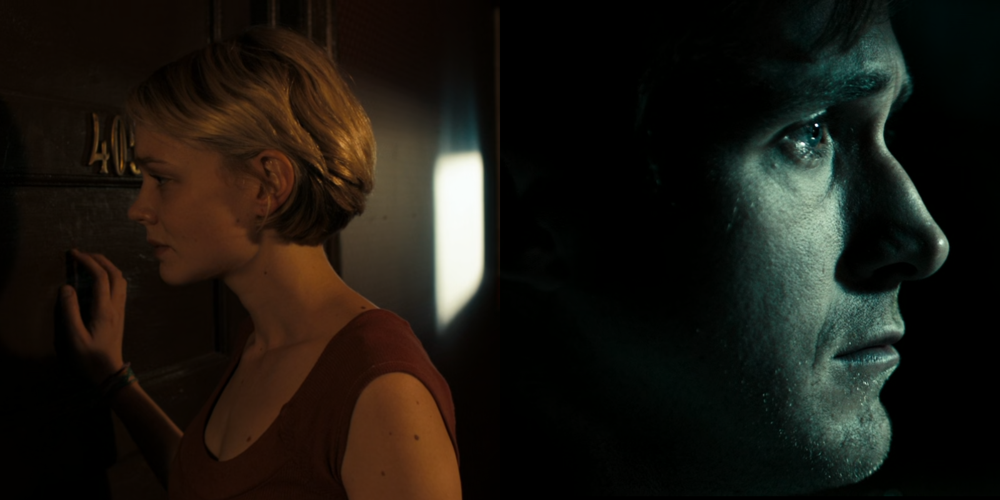

TÌNH YÊU TRONG DRIVE ĐƯỢC THỂ HIỆN NHƯ THẾ NÀO?
Written on March 28th, 2023 by Minh Tran
*Bài viết có tiết lộ nội dung phim
Drive là tác phẩm của đạo diễn Nicolas Winding Refn, với Ryan Gosling đóng chính trong vai một tài xế vô danh. Bộ phim được lựa chọn để tranh giải Cành cọ vàng tại Liên hoan phim Cannes năm 2011, tuy không thắng giải nhưng nó đã giúp đạo diễn Refn giành được giải thưởng Đạo diễn xuất sắc nhất. Phim là câu chuyện về một tài xế vô danh, về tình yêu của anh dành cho một người phụ nữ hàng xóm đã có gia đình tên Irene (Carey Mulligan), cũng như cách anh ta bảo vệ tình yêu của mình một cách đầy trần trụi, đẫm máu. Drive còn là câu chuyện ngụ ngôn thời hiện đại về con bọ cạp và con ếch, về bản chất của con người. Điểm đặc biệt của bộ phim có lẽ không nằm ở câu chuyện, mà nằm ở cái cách mà đạo diễn truyền tải đến người xem thông qua ngôn ngữ điện ảnh đầy đặc sắc của ông.
Bằng ngôn ngữ điện ảnh đầy tinh tế của mình, đạo diễn Refn đã lột tả được hết hai thái cực trái ngược nhau tồn tại song song bên trong tài xế. Anh yêu Irene một cách đầy giản dị, chân thành, anh làm mọi thứ vì cô, lặng lẽ hi sinh để bảo vệ cô an toàn. Nhưng vẫn anh tài xế đó, là bản chất bạo lực đến đáng sợ, luôn chờ trực để bộc phát ra ngoài. Phim cũng là cuộc hành trình trở thành người hùng của tài xế với tình yêu của đời mình. Lời thoại trong Drive có lẽ chỉ đóng vai trò thứ yếu, còn hình ảnh, âm nhạc, ánh sáng, màu sắc cũng như diễn xuất của các diễn viên mới là yếu tố dẫn dắt câu chuyện, và đó chính là điểm khiến cho bộ phim với mình trở nên đặc biệt như vậy. Trong bài viết này, mình sẽ tập trung phân tích tình yêu giữa tài xế và Irene được thể hiện như thế nào qua cảm nhận của mình, có thể đúng hoặc sai, và cũng có thể hơi suy diễn theo kiểu học văn =)))
Những phân cảnh mở đầu
“I drive” - Driver
Cảnh mở đầu phim tóm tắt ngắn gọn nhưng đầy đủ về công việc mà tài xế đang làm: lái xe thuê cho những băng đảng làm ăn bất hợp pháp chạy trốn. Sau đó, phim chuyển cảnh đến phần giới thiệu, đồng thời bản nhạc điện tử “Nightcall” vang lên, gợi nhớ đến những âm hưởng của thập niên 80. Cùng với đó là những khung hình tối tăm, lạnh lẽo trên con đường về nhà của tài xế. Cảm xúc trống rỗng, cô đơn của anh như được lột tả hết qua những hình ảnh và giai điệu này.

Khoảnh khắc tài xế gặp cô hàng xóm Irene lần đầu tiên trong phim, cũng ở phân cảnh này chúng ta được thấy hình ảnh con bọ cạp biểu tượng trên chiếc áo khoác của nhân vật chính. Có lẽ hình ảnh này thể hiện đủ được cả hai khía cạnh mà mình đã nhắc đến bên trong nhân vật chính.
Những khoảnh khắc đẹp nhất trong cuộc đời của tài xế

Tài xế tình cờ gặp Irene trong thang máy, rồi trong siêu thị. Anh giúp cô sửa xe, bê đồ. Khung cảnh bắt đầu ngả dần sang màu vàng cam đầy ấm áp. Anh đã được sưởi ấm và không còn cảm thấy cô đơn nữa. Tài xế đã rung động trước Irene.

Một góc máy đầy tinh tế, khi có đầy đủ cả bốn nhân vật, dù chỉ mình Irene xuất hiện trực tiếp. Phải chăng góc máy này phần nào đó báo trước rằng tài xế và Irene không thể đến với nhau.

Tiếp tục là một phân cảnh đầy tinh tế nữa khi chẳng cần một lời thoại nào, chúng ta cũng có thể cảm nhận được tình cảm mà tài xế dành cho Irene. Anh đứng một mình trong phòng ngắm nhìn hai mẹ con cô từ xa. Một ánh sáng vàng rọi vào người anh. Tài xế đã được tình yêu sưởi ấm. Anh khao khát được bảo vệ mẹ con Irene và trở thành một phần trong gia đình nhỏ của cô.
“Hey do you want to see something?” - Driver
Bài hát “A Real Hero” vang lên. Họ lái xe trên con đường đầy nắng và gió. Khung cảnh lúc này ấm áp hơn bao giờ hết. Tài xế thực sự rất hạnh phúc. Anh đã mỉm cười. Âm nhạc và hình ảnh hòa làm một, thể hiện rõ nét điều đó. Có lẽ lúc này, tài xế mới thực sự được sống như một con người.
"A real human being and a real hero..."

Irene ngắm nhìn tài xế bế con trai mình từ phía sau. Ánh mắt cô ánh lên sự hạnh phúc. Dường như đây là người có thể bảo vệ mẹ con cô, là gia đình nhỏ mà cô đã thiếu từ lâu.

Họ nắm tay nhau. Dù là trong đêm thì tông màu của khung cảnh vẫn đầy ấm áp.
Và rồi chồng của Irene trở về…

Irene thông báo chồng mình sắp trở về. Tài xế bỗng nhiên dừng xe lại, không nói gì. Chừng đó là đủ để ta hiểu niềm hạnh phúc mới chớm nở trong anh bỗng trở nên vụn vỡ. Anh lái tiếp, chấp nhận rằng niềm hạnh phúc ấy không thuộc về mình.

Irene hoàn toàn lạc lõng trong bữa tiệc chào đón chồng trở lại. Nụ cười của cô đầy gượng gạo. Trong khi đó, tài xế cũng cô đơn trong một khung hình tối tăm, lạnh lẽo. Phim chuyển cảnh đan xen giữa khung hình của tài xế và Irene. Họ luôn nghĩ về nhau. Chẳng cần một lời thoại nhưng biểu cảm, ánh mắt của Ryan Gosling và Carey Mulligan là quá đủ để nói lên tất cả…
Một lần nữa âm nhạc lại nói lên tiếng lòng của các nhân vật, lần này không chỉ của tài xế mà còn của Irene nữa. Bài hát “Under your spell” dù sôi động nhưng những câu hát mang đầy những nỗi buồn.
"I don't eat. I don't sleep. I do nothing but think of you. You keep me under your spell..."

Khung hình này là quá đủ để cảm nhận được nỗi buồn của Irene rồi…

Hai người gặp lại nhau sau bữa tiệc. Khung hình của tài xế ấm áp trở lại. Có lẽ mỗi lần được gặp cô, tâm hồn anh lại được sưởi ấm. Nụ cười lại nở trên môi của cả hai. Họ thật sự cảm nhận được tình cảm dành cho nhau.
Nguy hiểm xảy đến nhưng không sao cả…
Chồng của Irene bắt buộc phải tham gia một phi vụ do những ân oán trong quá khứ. Tài xế quyết định tham gia để trợ giúp, bảo vệ gia đình nhỏ mới đoàn tụ trở lại của Irene. Không may, chồng cô bị lừa và bỏ mạng. Irene và con trai cũng trong tình trạng nguy hiểm, có thể bị giết bất cứ lúc nào. Từ đây, tài xế làm tất cả để bảo vệ cô, theo những cách bạo lực và trần trụi nhất với bản năng của mình.
Phân cảnh kinh điển và biểu tượng của Drive, nó tuyệt đẹp, lãng mạn nhưng cũng đầy máu me, bạo lực. Một gã sát thủ được gửi đến khu chung cư nơi tài xế và Irene sống. Họ đi chung thang máy. Tài xế lấy tay che chở Irene. Anh quay lại hôn cô vì biết rằng đây sẽ là lần cuối anh được ở bên cô. Cùng lúc đó ánh sáng tắt dần khiến cho nụ hôn trở nên nửa thực nửa mơ. Trong thang máy lúc này dường như chỉ có hai người. Một nụ hôn đầy ngọt ngào, day dứt mà tài xế dành cho tình yêu của đời mình. Ngay sau những giây phút lãng mạn, ngọt ngào ấy là những màn bạo lực đến đáng sợ. Tài xế đánh đập gã sát thủ, giẫm nát mặt hắn dù không cần thiết phải làm như vậy. Irene cảm nhận tình yêu mà tài xế dành cho mình nhưng cũng thấy được những khía cạnh tăm tối nhất bên trong anh. Cô đi ra khỏi thang máy, rồi cánh cửa khép lại dần như thể đây là lần cuối họ gặp nhau. Trời ơi sao có thể đẹp mà buồn đến thế =((((
Tài xế đi trả thù cho nguời chủ của mình và cũng là để bảo vệ Irene. Lại một phân cảnh kinh điển nữa khi tài xế trong chiếc mặt nạ đầy điên dại đi trả thù trên nền bài hát “Oh My Love”. Kể cả khi trả thù, anh cũng chỉ nghĩ về tình yêu dành cho Irene, và nó luôn ngọt ngào, lãng mạn như bản nhạc ấy.

Trước khi đi gặp Bernie (phản diện của bộ phim), chúng ta mới được thấy lần đầu tài xế thổ lộ tình cảm của mình, và cũng là lần cuối anh nói chuyện với cô.
“Getting to be around you and Benicio was the best thing that ever happened to me” - Driver
Irene lúc này lấy tay chạm lên môi của mình. Có lẽ điều này đã xác nhận nụ hôn của cô và anh trong thang máy là thật.
Một anh hùng thật sự…

Sau khi thanh toán toàn bộ những người có thể làm hại mẹ con Irene, tài xế bị thương nặng nhưng vẫn lái xe trên những con đường vô định. Bài hát “A Real Hero” một lần nữa lại vang lên. Irene sang nhà gõ cửa tìm anh, có lẽ cô đã chấp nhận được tình cảm mà anh dành cho cô. Tài xế cũng cảm nhận được điều đó, và anh đã trở thành người hùng trong cuộc đời của anh, của Irene và con trai. Một tình yêu buồn kết thúc nhưng sau cùng anh đã đạt được mục đích của mình, trở thành người hùng và sống như một con người thực sự.
"A real human being and a real hero..."
Kết
Drive là một trong những tác phẩm hay nhất mà mình từng được xem. Phim thực sự khiến mình cảm thấy thán phục ngôn ngữ điện ảnh của đạo diễn Nicolas Winding Refn, thêm say đắm nét trầm mặc, suy tư của Ryan Gosling, điều đã được thể hiện trong Blade Runner 2049 (mình xem phim này trước), thêm mê hoặc nét mỏng manh, tinh khiết của Carey Mulligan, điều đã được thể hiện trong The Great Gatsby (cũng do mình xem phim này trước, và thực sự chị Carey quá xinh, đúng chất nàng thơ =)))). Drive xứng đáng là một trong những tác phẩm mà mình được xem có thể định nghĩa điện ảnh là gì, khi ở đó lời thoại chỉ là thứ yếu, còn hình ảnh, âm thanh, ánh sáng, màu sắc, diễn xuất mới là thứ dẫn dắt câu chuyện và găm sâu những cảm xúc vào trong người xem.